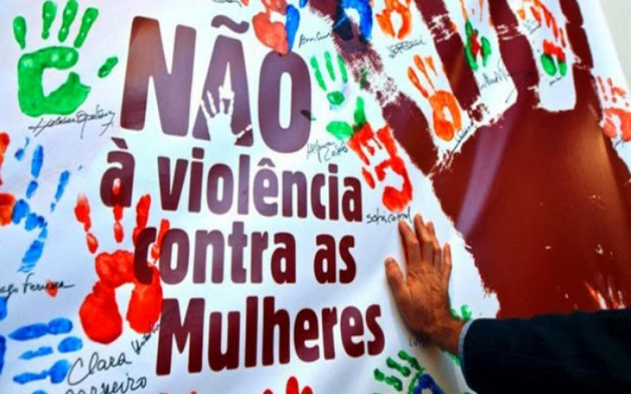
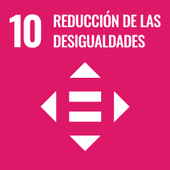
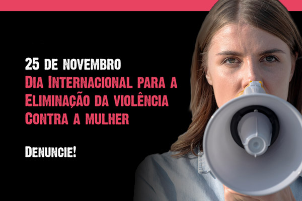

Violêcia contra mulheres e meninas é crime.
No dia 9 de outubro a lei foi saceada
No mundo são um pouco mais de 380 casos de violêcia apresentados na justiça. Um indice de violêcia sao mais ou menos de uma a cada tres mulheres no mundo são violêntadas.
 
O dia intenacional da não a violêcia
A violência contra mulheres e meninas é uma violação grave dos direitos humanos e uma questão de saúde pública que afeta milhões de vidas ao redor do mundo. Este tipo de violência manifesta-se de várias formas, incluindo violência física, sexual, psicológica e econômica.
É importante destacar que essa problemática não é restrita a um único contexto cultural ou econômico; ela permeia todas as sociedades, independentemente do nível de desenvolvimento. Além disso, muitos casos de violência permanecem invisíveis, pois as vítimas muitas vezes enfrentam barreiras para denunciar os agressores, como o medo de represálias, a falta de apoio social e a estigmatização.
As consequências da violência contra mulheres e meninas são devastadoras, afetando não apenas a saúde física e mental delas, mas também impactando suas famílias e comunidades. O ciclo de violência pode ser interrompido por meio da educação, conscientização rotegem os direitos das mulheres.
É essencial que todos nós, como sociedade, nos unamos para combater essa violência, promovendo um ambiente de respeito, igualdade e segurança para todas as pessoas. Isso inclui apoiar organizações que trabalham na prevenção e assistência às vítimas, além de promover campanhas educativas que desmistificam estereótipos de gênero.
O objetivo é promover a igualdade de gênero.
Tópicos sobre a Violência contra Mulheres e Meninas:
- 1. Tipos de Violência:
- - Violência física, sexual, emocional e psicológica
- - doméstica e familiar.
- - Tráfico de mulheres e meninas para exploração sexual.
- 2. Causas Estrutura:
- Desigualdade de gênero e patriarcado.
- Normas culturais e sociais que perpetuam a violência.
- Falta de acesso à educação e empoderamento econômico.
- 3. Impactos da Violência:
- Consequências físicas e emocionais.
- Efeitos na saúde mental e bem-estar.
- Impactos sociais e econômicos, incluindo custos para os sistemas de saúde e justiça.
- 4. Papel da Educação:
- Importância da educação sobre gênero e respeito desde a infância.
- Programas escolares que promovam a igualdade e o respeito mútuo.
- 5. Legislação e Políticas Públicas:
- Necessidade de leis robustas que protejam mulheres e meninas.
- Importância de políticas públicas de prevenção e atendimento às vítimas.
- 6. Apoio às Vítimas:
- Serviços de apoio psicológico e jurídico.
- Abrigos e centros de acolhimento.
- 7. Engajamento da Comunidade:
- Mobilização de comunidades para combater a violência.
- A importância de campanhas de conscientização.
O que Podemos Fazer para Diminuir a Violência:
- 8 Promover programas educativos nas escolas que abordem a igualdade de gênero e a prevenção da violê
">
- RealA Lei n. 11.340, sancionada em 7 de agosto de 2006, passou a ser chamada Lei Maria da Penha em homenagem à mulher cujo marido tentou matá-la duas vezes e que desde então se dedica à causa do combate à violência contra as mulheres.izar campanhas de conscientização na mídia e nas redes sociais.
- Criar e divulgar serviços de apoio para vítimas, como helplines e centros de acolhimento.
- Capacitar profissionais de saúde, polícia e assistência social para oferecer suporte adequado.
3. Advocacy e Mobilização:
- Apoiar e participar de movimentos sociais que lutem contra a violência de gênero.

No dia 25 de novembro é comemorado o dia internacional para combater a violencia contra mulher.
A Lei n. 11.340, sancionada em 7 de agosto de 2006, passou a ser chamada Lei Maria da Penha em homenagem à mulher cujo marido tentou matá-la duas vezes e que desde então se dedica à causa do combate à violência contra as mulheres.